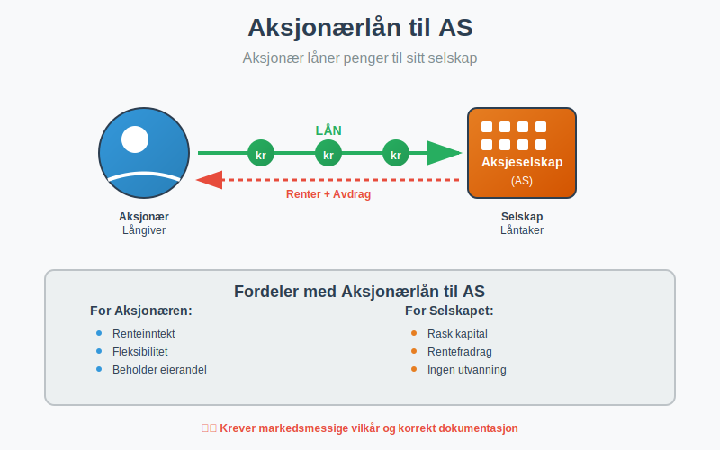
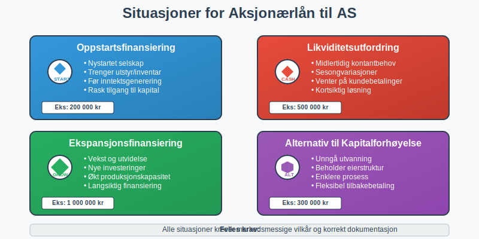
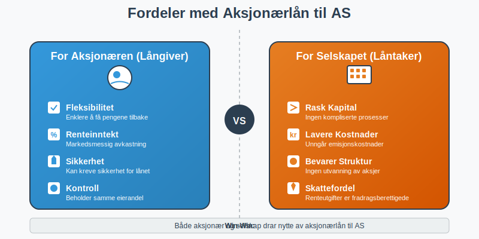
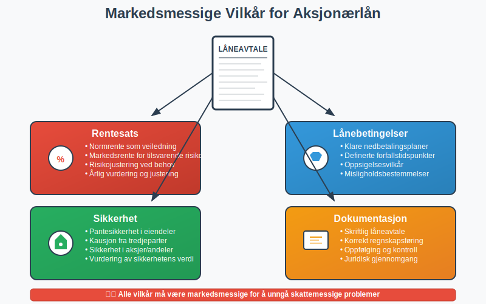
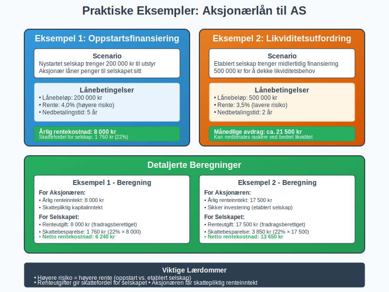

Et aksjonærlån til AS er et lån som en aksjonær gir til sitt eget aksjeselskap. Dette er en vanlig måte å tilføre kapital til selskapet på, spesielt i oppstartsfasen eller når selskapet trenger ekstra likviditet.

Hva er et Aksjonærlån til AS?
Et aksjonærlån til AS oppstår når en aksjonær låner penger til selskapet sitt i stedet for å øke aksjekapitalen. Dette kan være:
- Kortsiktig finansiering: For å dekke midlertidige likviditetsbehov
- Oppstartskapital: Når selskapet trenger penger før det kan generere inntekter
- Ekspansjonsfinansiering: For investeringer og vekst
- Alternativ til kapitalforhøyelse: Når man ikke ønsker å utvanne eierandelene
Lånet må dokumenteres skriftlig og følge markedsmessige vilkår for å unngå skattemessige problemer.

Fordeler med Aksjonærlån til AS
For Aksjonæren (Långiveren)
- Fleksibilitet: Enklere å få pengene tilbake enn ved kapitalforhøyelse
- Renteinntekt: Kan motta markedsmessig rente på lånet
- Sikkerhet: Kan kreve sikkerhet for lånet
- Kontroll: Beholder samme eierandel i selskapet
For Selskapet (Låntakeren)
- Rask tilgang til kapital: Ingen kompliserte kapitalforhøyelsesprosesser
- Lavere kostnader: Unngår kostnader ved emisjon av nye aksjer
- Bevarer eierstruktur: Ingen utvanning av eksisterende aksjonærer
- Skattefordel: Renteutgifter er fradragsberettigede

Skattemessige Konsekvenser
For Aksjonæren (Långiveren)
- Renteinntekt: Mottatt rente regnes som skattepliktig kapitalinntekt
- Tap på fordring: Eventuelle tap kan være fradragsberettiget
- Dokumentasjon: Må kunne dokumentere lånet og renteinntektene
For Selskapet (Låntakeren)
- Renteutgift: Betalt rente er fradragsberettiget i selskapet
- Markedsmessig rente: Må betale markedsmessig rente for å unngå problemer
- Regnskapsføring: Lånet må føres korrekt i regnskapet
Markedsmessig Rente og Vilkår
For at lånet skal være skattemessig akseptabelt, må det ha markedsmessige vilkår:
Rentesats
- Normrente: Skatteetaten fastsetter en normrente som veiledning
- Markedsrente: Renten må tilsvare det selskapet ville betalt til en ekstern långiver
- Risikojustering: Høyere risiko kan rettferdiggjøre høyere rente
Lånebetingelser
- Nedbetalingsplan: Klare avtaler om tilbakebetaling
- Sikkerhet: Eventuelle sikkerheter må dokumenteres
- Oppsigelse: Vilkår for oppsigelse av lånet

Dokumentasjonskrav
Alle aksjonærlån til AS må være skriftlig dokumentert:
Låneavtale
- Lånebeløp: Hvor mye som lånes til selskapet
- Rentesats: Markedsmessig rente som skal betales
- Nedbetalingsplan: Hvordan og når lånet skal tilbakebetales
- Sikkerhet: Eventuelle sikkerheter selskapet stiller
- Misligholdsbestemmelser: Konsekvenser ved manglende betaling
Regnskapsføring
Lånet må føres korrekt i både aksjonærens og selskapets regnskap:
I Selskapets Regnskap:
- Balansen: Lånet føres som gjeld til aksjonær
- Resultatregnskapet: Renteutgifter føres som finanskostnad
- Noter: Aksjonærlån må spesifiseres i notene
I Aksjonærens Regnskap:
- Balansen: Lånet føres som fordring på selskap
- Resultatregnskapet: Renteinntekter føres som finansinntekt
Praktiske Eksempler
Eksempel 1: Oppstartsfinansiering
Et nystartet selskap trenger 200 000 kr til utstyr:
- Lånebeløp: 200 000 kr fra aksjonær
- Rente: 4,0% (markedsmessig for oppstartsselskap)
- Nedbetalingstid: 5 år
- Årlig rentekostnad for selskap: 8 000 kr
- Skattefordel for selskap: 8 000 kr × 22% = 1 760 kr
Eksempel 2: Likviditetsutfordring
Etablert selskap trenger midlertidig finansiering:
- Lånebeløp: 500 000 kr
- Rente: 3,5% (lavere risiko)
- Nedbetalingstid: 2 år
- Månedlige avdrag: ca. 21 500 kr
- Fleksibilitet: Kan nedbetales raskere ved bedret likviditet

Alternativer til Aksjonærlån
Kapitalforhøyelse
- Permanent kapital: Pengene blir permanent egenkapital
- Utvanning: Kan påvirke eierforhold hvis andre ikke deltar
- Kompleksitet: Krever generalforsamlingsvedtak og registrering
Innskuddskapital
- Mellomløsning: Kan senere konverteres til aksjekapital
- Fleksibilitet: Enklere å få tilbake enn aksjekapital
- Skattemessig: Spesielle regler for innskuddskapital
Ekstern finansiering
- Banklån: Tradisjonell finansiering fra bank
- Høyere krav: Strengere krav til sikkerhet og dokumentasjon
- Uavhengighet: Ikke avhengig av aksjonærenes private økonomi
Risiko og Fallgruver
Vanlige Feil
- Manglende dokumentasjon: Lån uten skriftlig avtale
- Ikke-markedsmessige vilkår: For lav eller høy rente
- Feil regnskapsføring: Ikke føre lånet korrekt
- Blanding med privat økonomi: Ikke skille mellom privat og selskap
Konsekvenser ved Feil
- Skatteetaten kan omklassifisere lånet som kapitalinnskudd
- Tap av rentefradrag for selskapet
- Skattemessige problemer for aksjonæren
- Juridiske utfordringer ved manglende dokumentasjon
Juridiske Aspekter
Aksjelovens Bestemmelser
Aksjeloven regulerer forholdet mellom aksjonærer og selskap:
- Kreditorvern: Aksjonærlån må ikke svekke kreditorenes stilling
- Likestilling: Alle aksjonærer må behandles likt
- Styrets ansvar: Styret må vurdere selskapets evne til å betjene lånet
Konkursloven
Ved konkurs har aksjonærlån spesiell status:
- Ansvarlig lånekapital: Kan bli underordnet andre kreditorer
- Tilbakebetalingsrett: Begrenset rett til tilbakebetaling ved konkurs
- Dokumentasjon: Viktig med korrekt dokumentasjon for å bevare rettigheter
Praktiske Råd
For Aksjonæren
- Vurder risiko: Forstå at lånet kan gå tapt ved konkurs
- Krev markedsmessige vilkår: Både rente og sikkerhet
- Dokumenter alt: Skriftlig avtale og oppfølging
- Følg opp betalinger: Sørg for at renter og avdrag betales
- Konsulter eksperter: Få juridisk og regnskapsmessig rådgivning
For Selskapet
- Vurder alternativer: Sammenlign med andre finansieringsformer
- Sørg for bærekraft: Ikke ta opp mer enn selskapet kan betjene
- Korrekt regnskapsføring: Før lånet riktig fra dag én
- Overholdelse av avtaler: Betal renter og avdrag i tide
- Kommunikasjon: Hold aksjonæren informert om selskapets situasjon
Regnskapsføring i Detalj
Etablering av Lånet
Selskapets Regnskap:
Debet: Bank/Kasse (økning i eiendeler)
Kredit: Gjeld til aksjonær (økning i gjeld)
Aksjonærens Regnskap:
Debet: Fordring på selskap (økning i eiendeler)
Kredit: Bank/Kasse (reduksjon i eiendeler)
Renteberegning og Betaling
Selskapets Regnskap:
Debet: Rentekostnad (kostnad)
Kredit: Gjeld til aksjonær (økt gjeld) eller Bank (betaling)
Aksjonærens Regnskap:
Debet: Bank/Kasse eller Fordring (økning)
Kredit: Renteinntekt (inntekt)
Oppfølging og Kontroll
Løpende Oppfølging
- Renteberegning: Månedlig eller kvartalsvis beregning
- Betalingsoppfølging: Kontroll av at avtaler overholdes
- Likviditetsvurdering: Vurdering av selskapets betalingsevne
- Markedsrentejustering: Årlig vurdering av rentesats
Årlig Gjennomgang
- Avtalegjennomgang: Vurdering av om avtalen fortsatt er hensiktsmessig
- Risikoevaluering: Vurdering av selskapets kredittverdighet
- Skattemessig gjennomgang: Kontroll av skattemessig behandling
- Regnskapsrevisjon: Kontroll av korrekt regnskapsføring
Relaterte Begreper
For å forstå aksjonærlån til AS fullt ut, bør du også sette deg inn i:
- Aksjeselskap (AS) - Selskapsformen som mottar lånet
- Aksjer - Eierandelene som gir rett til å låne til selskapet
- Aksjekapital - Alternativ til lån for kapitalinnsprøytning
- Aksjonærlån fra AS - Det motsatte: lån fra selskap til aksjonær
- Aksjeloven - Loven som regulerer forholdet mellom aksjonærer og selskap
- Regnskap - Regnskapsføring av lån og renter
Aksjonærlån til AS kan være en effektiv finansieringsform, men krever nøye planlegging, korrekt dokumentasjon og oppfølging for å sikre både skattemessig og juridisk korrekt behandling.